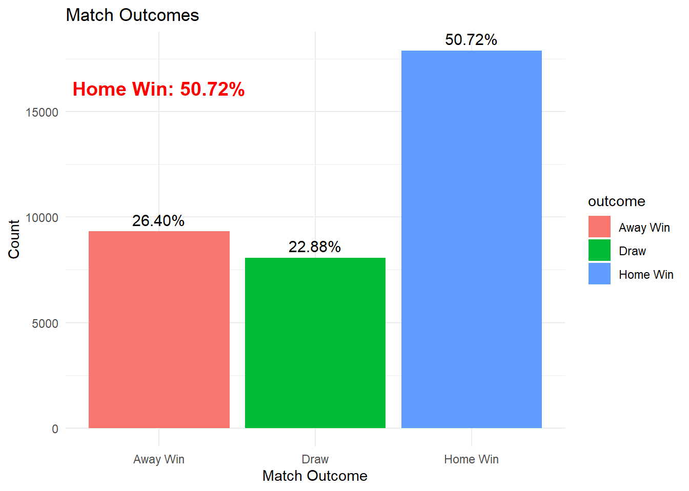
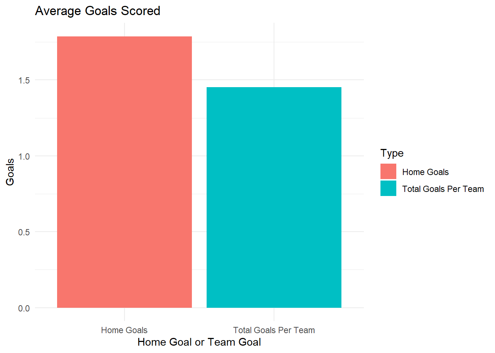

| home_team | away_team | home_score | away_score | outcome | date |
|---|---|---|---|---|---|
| Scotland | England | 0 | 0 | Draw | 1872-11-30 |
| England | Scotland | 4 | 2 | Home Win | 1873-03-08 |
| Scotland | England | 2 | 1 | Home Win | 1874-03-07 |
| England | Scotland | 2 | 2 | Draw | 1875-03-06 |
| Scotland | England | 3 | 0 | Home Win | 1876-03-04 |
| Scotland | Wales | 4 | 0 | Home Win | 1876-03-25 |
| England | Scotland | 1 | 3 | Away Win | 1877-03-03 |
| Wales | Scotland | 0 | 2 | Away Win | 1877-03-05 |
| Scotland | England | 7 | 2 | Home Win | 1878-03-02 |
| Scotland | Wales | 9 | 0 | Home Win | 1878-03-23 |
Home Team Advantage in International Soccer
Introduction:
Research Question
Does a ‘home field advantage’ exist in international soccer?
Data Source
The data, International Football Results from 1872 to 2024, was sourced from Kaggle. This data set contains the results and statistics from over 40,000 international soccer matches from as far back as 1872.
Provenance
The dataset was collected by Mart Jürisoo to analyze international football trends and performance. It includes matches from over 200 nations, covering friendlies, qualifiers, and tournament matches.
FAIR Principles
The dataset adheres to FAIR principles:
- Findable: Available on Kaggle with descriptive metadata.
- Accessible: Publicly downloadable in CSV format.
- Interoperable: Compatible with standard data analysis tools.
- Reusable: Clear licensing allows academic and non-commercial usage.
CARE Principles
The data set does not involve sensitive or personal data, making ethical concerns minimal. It focuses on publicly available sports data.
Results and Discussion
Home Team Win Percentage
Figure 1 illustrates the win percentage of home teams across all matches. The home team wins approximately 50.72% of the time.
Looking at this figure you may not think that is much of a ‘home team advantage’ however if you take into account that there are times when the home team wins, when the away team wins, and when both teams draw you see a different story.
Away teams win about 26.4% of the time while both teams draw 22.88% of the time, showing that when a team plays on their home field there is almost twice the likelihood that they win rather than lose to the away team but there is still only about less than a percent chance that they will outright win the game.
This suggests that there is a home team advantage for not losing the game but there is not necissarly a home team advantage to win the game
Average Goals Scored
Figure 2 compares average goals scored by home teams (1.78) against the average total goals per team in matches (1.45).
To determine the average goals scored by home teams you simply take the average of that column to find the amount. However to find the average goals per team in matches it is a little more complicated. You find the average of both teams goals (2.92) and divide it in half to find the average goals scored by each team in a match.
These figures show that there is an increase in the average number of goals the home team scores in a game. Even though .33 goals does not seem that significant this is an average of about 40,000 games so it will definitely close that margin between the two figures.
Even with the small difference between the two goal sets you can see that there is an increase in the number of goals scored by the home team, especially when you take into account that the average game of soccer does not have nearly as many points as other games you can see that there is a clear difference between how much the home team and away teams score. This helps confirm that there is seemingly a ‘home team advantage’
Data Visualizations
Figure 1: Home Team Win Percentage
A bar plot of match outcomes (win/loss/draw) categorized by match type.

Figure 2: Average Goals Comparison
A side-by-side bar chart comparing home goals and total match goals.

Conclusion
With the fact that there is double the chance that the home team does not lose and with the fact there is an increase in the average goals scored by the home team during a match this shows that there is some kind of ‘home team advantage’. Though every game is played out to the best of the abilities of the players it seems that the home team does have a leg up on the visiting team they are playing.
Some other things to take into account with this that is not measurable by this data set is the audience for the game. When playing at home it goes without saying that the majority of the stadium will be filled with spectators that support your team without question. They will cheer the loudest for you which, as someone who has played a team sport, makes you that much more willing to play harder for that match. This is along with the home team practicing on that field for the time before the match are most likely some reasons this ‘home team advantage’ happens.
Appendix: Code
#|label = Cleaning Data
# Load libraries
library(tidyverse)
library(knitr)
# Load data
football_data <-read_csv("results.csv")
# Filter out neutral matches
football_clean <- football_data %>%
filter(neutral == FALSE)
# Add match outcome column
football_clean <- football_clean %>%
mutate(
outcome = case_when(
home_score > away_score ~ "Home Win",
home_score < away_score ~ "Away Win",
TRUE ~ "Draw"
)
)
# Home win percentage
home_win_rate <- as.integer(mean(football_clean$outcome == "Home Win") * 100)
# Average goals
avg_home_goals <- mean(football_clean$home_score)
avg_total_goals_per_team <- mean((football_clean$home_score + football_clean$away_score)/2)
football_clean %>%
select(home_team, away_team, home_score, away_score, outcome, date) %>%
head(10) %>% # Display the first 10 rows for clarity
kable(caption = "Football Match Results (Filtered)")
#|Label = Figure 1
library(ggplot2)
library(dplyr)
# Calculate percentage of home wins
win_data <- football_clean %>%
mutate(total_matches = n()) %>%
count(outcome, total_matches) %>%
mutate(percentage = (n / total_matches) * 100)
# Extract the percentage of home wins for annotation
home_win_percentage <- win_data %>%
filter(outcome == "Home Win") %>%
pull(percentage)
# Create the bar plot with annotation
win_plot <- win_data %>%
ggplot(aes(x = outcome, y = n, fill = outcome)) +
geom_bar(stat = "identity") +
labs(
title = "Match Outcomes",
x = "Match Outcome",
y = "Count"
) +
theme_minimal() +
geom_text(aes(label = sprintf("%.2f%%", percentage)), vjust = -0.5, size = 4) + # Add percentages above bars
annotate(
"text",
x = 1, y = max(win_data$n) * 0.9, # Position near the top of the Home Win bar
label = sprintf("Home Win: %.2f%%", home_win_percentage),
color = "red",
size = 5,
fontface = "bold"
)
# Save the plot
ggsave("win_plot_with_percentage.pdf", win_plot, width = 8, height = 7)
print(win_plot)
#|Label = Figure 2
# Plot 2: Average goals comparison
goals_plot <- tibble(
Type = c("Home Goals", "Total Goals Per Team"),
Average = c(avg_home_goals, avg_total_goals_per_team)
) %>%
ggplot(aes(x = Type, y = Average, fill = Type)) +
geom_bar(stat = "identity") +
labs(
title = "Average Goals Scored",
x = "Home Goal or Team Goal",
y = "Goals"
) +
theme_minimal()
ggsave("goals_plot.pdf", goals_plot, width = 8, height = 6)
print(goals_plot)